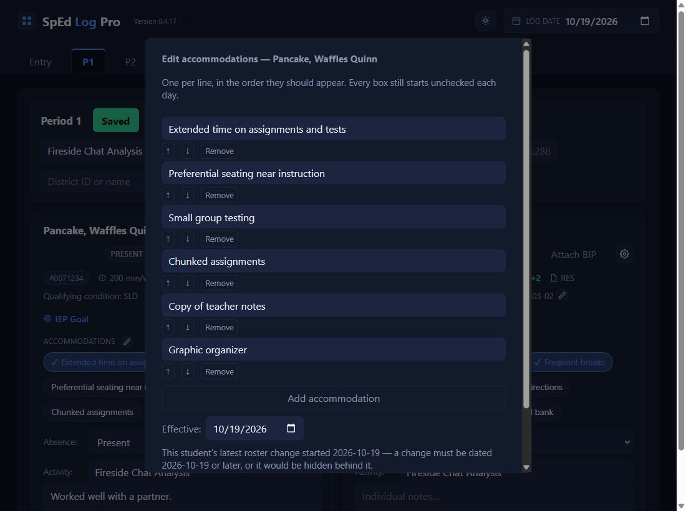
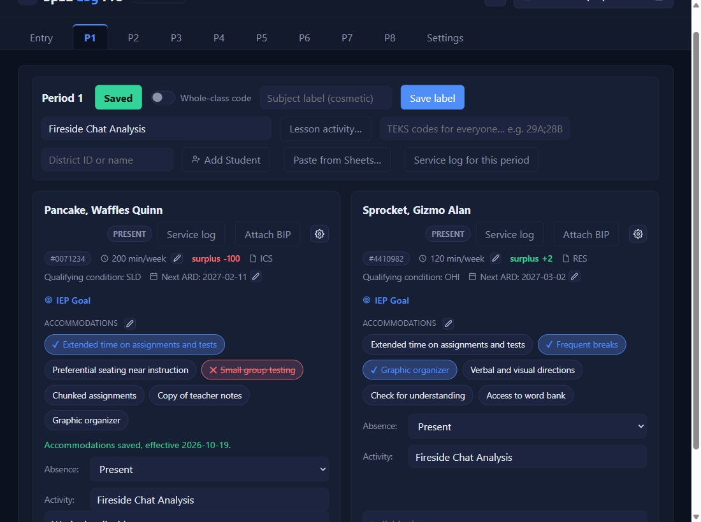

When the IEP changes
Edit a student’s accommodations
⏱ About 3 minutes🔁 After an ARDYou need: the ARD date
Why: when an ARD adds, removes, or rewords an accommodation, change the list on the card. Days already logged keep exactly what was marked on them.
1
Click the pencil next to ACCOMMODATIONS
The pop-up lists the student's accommodations, one per line.

2
Change the list
↑ and ↓ move a line, Remove takes one off, Add accommodation adds an empty line to type in. One accommodation per line.
3
Set Effective to the ARD date, then Save accommodations
Scroll down in the pop-up for Save accommodations. Days before the date keep the old list.
4
The card updates
A green line confirms it, and the new chip appears, unmarked like every chip each day.

✓ You'll know it worked
- A green line:
Accommodations saved, effective … - The new list on the card from that date on.
✕ Avoid these
- A semicolon inside a line. It would split it into two accommodations.
- Dating it today. Use the ARD date.
- Expecting it to mark anything. Every chip still starts unmarked each day.
⚠ If you see this
"…" has a semicolon in it, which would split it into two accommodations.Reword it, or put each on its own line.
Nothing changed, so nothing was saved.The list matches what's already there.
There's already a roster change for this student starting …Use that date or later.